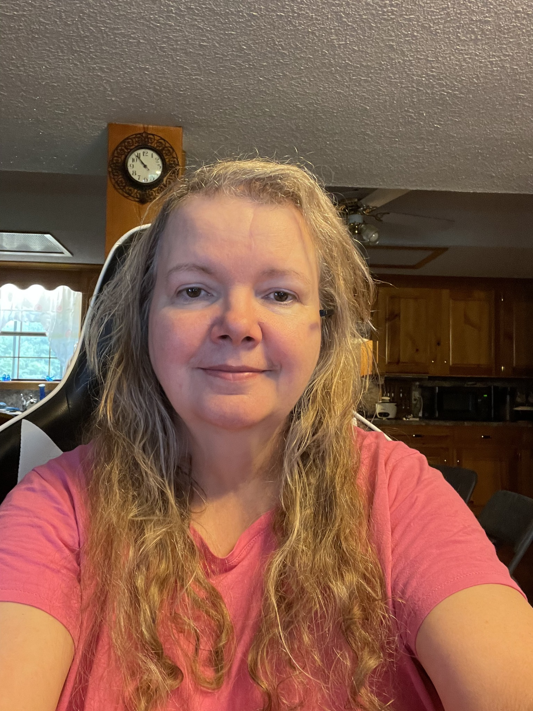

Opt for a volumizing mousse, foam, or a light-to-medium hold gel instead of heavy curl creams or butters
Rake, glaze, and scrunch. Rake a leave-in conditioner or mousse through your hair, smooth a light gel over the outside of your wave clumps (glazing), and pulse-scrunch upward from the ends to the roots
Micro-plop instead of using a bath towel. Regular terrycloth towels cause frizz. Gently scrunch excess water out of your hair using a microfiber towel or a soft cotton T-shirt for a few minutes to boost bounce without flattening the roots.
Flip your part - Part on the opposite side you want to have your part. Once your hair is completely dry, flip your part to the opposite side for instant, zero-effort root volume.
Hover-diffuse upside down - low speed. Flip your head upside down and hover a diffuser around your roots on medium heat and low-to-medium airflow until they are mostly dry. Drying the roots first locks in lift before water weight pulls them flat.
Cup-diffuse the lengths. Once the roots are dry, gently gather sections of your waves into the diffuser bowl and hold them up against your scalp for 15 to 30 seconds per section.
Clip your roots. If you prefer air-drying, insert small claw clips or duckbill clips at your crown to lift the hair away from your scalp while it sets.
Finish and Refreshing - Scrunch out the crunch. If your styling gel leaves a stiff cast once your hair is 100% dry, gently scrunch your waves with bare hands or a drop of lightweight hair oil to reveal soft, bouncy waves.
Fluff at the roots. Slide your fingertips under your hair against your scalp and gently shake to separate the roots and add instant fullness.
Protect overnight. Loosely gather your hair on top of your head with a satin scrunchie (known as "pineappling") or sleep on a silk pillowcase to prevent your waves from getting crushed while you sleep.
To refresh on day 2, 3, 4, mist with water and scrunch upward.
No Styling

AI styles:
All Styles
No makeup
With light makeup. Hair a bit fuller so that it fills out more at the sides of the face..
Fuller, more defined curl, look.
Shoulder length layered cut. This has softer, face framing layers, fuller volume around the cheeks, and gently curled ends.
Curtain banks that blend into the curls around the face. Notice how the bangs flare out right at eye level and almost point to the eyes.
Clothes
When I am thin, I want to indulge my fantasy to wear the more historical garment styles that match to my love of white lace clothes. However, there is a functional side to it. After losing 60 pounds, I will have loose skin to deal with. Clothing styles that very naturally work with structural support to support and control that extra skin will be useful. Core needs:
The skin must breath and sweat should not be trapped against the skin, so aim for cotton or cotton blend material for absorption and evaporation of sweat. A blend of spandex is useful to give some compression. Without the spandex, lacing or hooks would be needed.
Be careful of chaffing. If the skin gets irritated, it can become prone to infection.
Lean toward full torso and high back coverage to reduce spill over (longline, overbust, vest style).
Flat, smooth seams that do not cut into skin
Flexible boning (spiral steel or soft boning)
Lace up or multiple row adjustability.
Here are some terms to learn regarding functional clothing structures:
corset: underclothes with structure to compress and shape the torso.
bodice: outer garment popular in Victorian and Renaissance times. It fits snugly over the chest and waist. often it is laced but is more for support than waist reduction.
stay: The 18th-century predecessor to the corset. Stays feature a V-shaped front profile that flattens the abdomen and pushes skin smoothly upward, which can be much more comfortable for loose skin than modern high-compression waist cinchers.
Longline Bustier: An extended bra style reaching down to the waist. It pairs delicate white lace with light boning, giving you the historical look and smooth containment with a softer, modern stretch.
Here are style terms related to the outer garments that can also provide some support:
V-Waistband / Swiss Waist Effect: The pointed or V-shaped front cut on this skirt is a classic historical design technique (often called a Swiss waist or pointed waistband). Visual Illusion: It mimics the downward point of historical corsets and stays, which visually elongates the torso and creates an hourglass illusion.